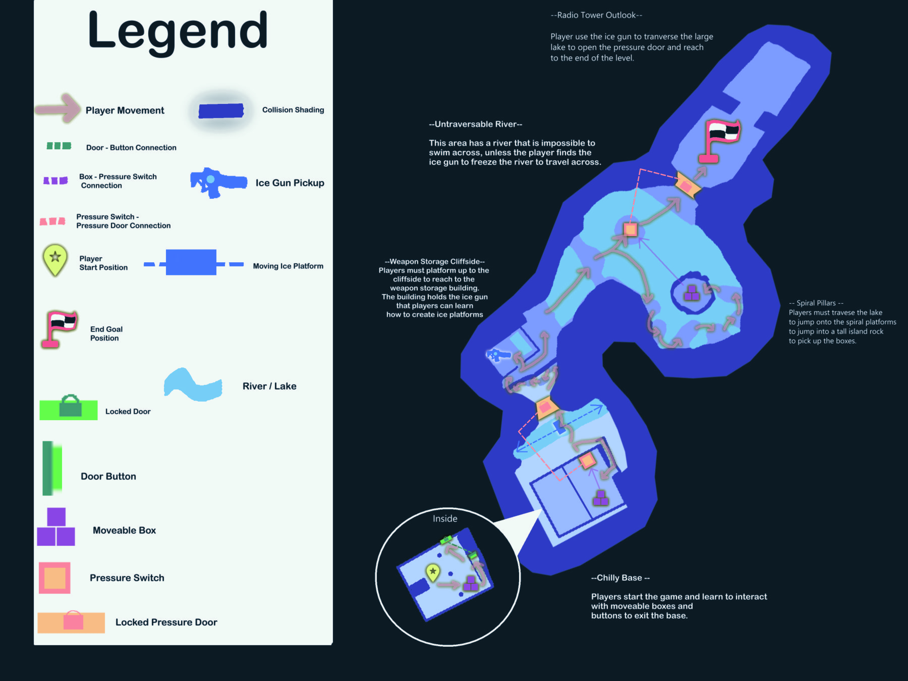

Ancient Ice Glaciers
This is a student project in making a single first person game in Unreal Engine. This level is set in a sci-fi oceanic ice planet where a sudden alarm is sounded off across an ice mountain base. Player must navigate through a glacial environment, jumping across floating ice, and finding a ice gun that could freeze water to create ice platforms.
Gameplay Overview
The game has a balance of platforming over moving floating ice and mountainous rocks, as well as solving puzzles of carrying boxes to pressure plates to open the locked doors. The player will find and use an ice gun that can create ice platforms on the planet’s waters. The player is tested throughout the level for each mechanic until the final challenge. The player must create ice platforms to jump up the mountain rocks to reach a platform that has pickable boxes to platform the created ice platforms to open to the door into the mountain.
Level Design
I went into making this level to have a balance of puzzle solving mechanics with platforming challenges. I strike a balance by designing a player ability to allow players to create floating ice on any water surface to allow player creativity when building their own bridges and platforms. To then I started working on the papermap, to tie each mechanic as a learning experience for the player so solve each challenge. In the level, players can platform on cliffside icebergs, jump across floating slippery ice, utilizing the game mechanics to solve each challenge.
During the design process there were challenges into implement limitation and balance to the player ability to create ice platforms. At first there was thought to have the gun spawn limitless platforms, but it leads to players getting stuck or making each challenge to be easy. To solve the issue I had a thought that the players could deactivate the ice platform one at a time, a undo button the player could choose to use. But from a play feedback, it was tedious to cycle through ice platforms to be deactivated. So I approached for the players to deactivating all spawn ice platforms to clean up space but allow players to redo their platforms in most quick efficient way that doesn’t get in the way of the game experience. Another challenge was to readjust the game feel, as the moving platform speed and timing required the most changes to allow more fair ability to platform on rather than a challenging one.